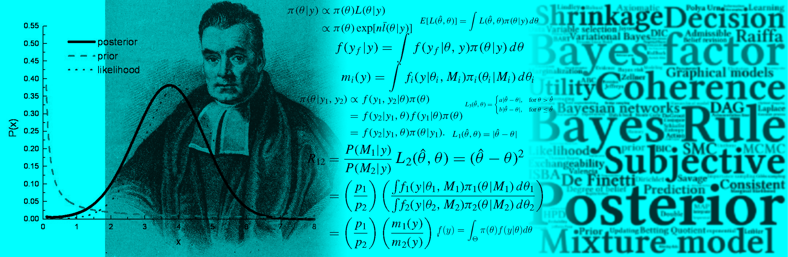

Introduction to Bayesian Econometrics
A GUIded tour
2021-01-12
Introduction
 Since late 90’s Bayesian inference has gained a lot of popularity among researchers due to the computational revolution and availability of algorithms to solve complex integrals. However, many researchers, students and practitioners still lack understanding and application of this inferential approach. The main reason is the requirement of good programming skills.
Introduction to Bayesian econometrics: A GUIded tour mainly targets those who want to apply Bayesian regression analysis having a good conceptual and formal understanding, but not having time to develop programming skills. Thus, this book provides a graphical user interface (GUI) to carry out Bayesian regression in a very friendly environment. The book also provides the basic theory, and its code implementation using R software (R Core Team 2021), some econometric applications to highlight the potential of Bayesian regression, and theory and computational exercises, for those who are interested in developing more complex models.
Our GUI is based on an interactive web application using shiny (Chang 2018), and some libraries in R (see Table 13.1 in the Appendix). Users can estimate univariate, multivariate, hierarchical, Bayesian bootstrap and Bayesian model average models using our GUI. In addition, it gives basic summaries and formal and graphical diagnostics of the posterior chains. Our GUI can be run in any operating system, and is freely available at https://github.com/besmarter/BSTApp.
Users can get simulated and real datasets in the folders DataSim (see Table 13.2 for details), and DataApp (see Table 13.3 for details), respectively. The former folder also includes the files that were used to simulate different processes, so, the population parameters are available, and as a consequence these files can be used as a pedagogical tool to show some statistical properties. The latter folder contains the datasets used in our applications. Users should use these datasets as templates to structuring their own datasets. Simply type shiny::runGitHub(“besmarter/BSTApp”, launch.browser=T) in the R package console or any R code editor to run our GUI.1
Chapter 1 begings with an introduction to formal concepts in Bayesian inference starting with the Bayes’ rule, all its components with their formal definitions and basic examples. Then, it presents the basics of Bayesian inference based on decision theory under uncertainty. Chapter 2 presents conceptual differences between Bayesian and Frequentist statistical approaches, and a historical and philosophical perspective about Bayesian statistics and econometrics highlighting differences compared to the frequentist approach. Chapter 3 presents the differences between the objective and subjective schools in Bayesian inference. Particular attention is put to elicitation techniques, that is, how to transform expert knowledge into prior probabilistic statements. In Chapter 4 I introduce conjugate families in basic statistical models, solving them analytically and computationally. Simulation based methods are shown in Chapter 5, these algorithms are very important in modern Bayesian inference as most realistic models do not have analytical solutions. Univariate and multivariate regression models are presented in chapters 6 and 7, respectively. Chapter 8 presents the state-space representation of time series models, and Chapter 9 presents Bayesian longitudinal models. In Chapter 10 I show formal and graphical convergence diagnostics of posterior chains. Chapter 11 introduces Bayesian model averaging, and Chapter 12 shows some basics of Bayesian non-parametric models. Chapter 13 describes some recent methodological developments such as variational Bayes (VB) and approximate Bayesian computation (ABC), and computational algorithms such as sequential Monte Carlo, Hamiltonian Monte Carlo and population Monte Carlo.
About me: My name is Andrés Ramírez-Hassan, I am an applied and theory econometrician working as a Professor in the Department of Economics at Universidad EAFIT (Medellín, Colombia). I got a PhD in Statistical Science, a masters degree in Finance, and another in Economics, and also a bachelor’s degree in Economics. I was a research fellow at the Department of Econometrics and Business Statistics at Monash University, and a visiting Professor in the Department of Economics at the University of Melbourne. Having completed my PhD degree, much of my research has been in the area of Bayesian Econometrics with applications in finance, utilities, health, crime and sports. My work has been published (or is forthcoming) in the International Journal of Forecasting, Journal of Applied Econometrics, Econometric Reviews, Economic Modelling, Spatial Economic Analysis, Economic Inquiry, World Development, Journal of Sport Economics, Empirical Economics, Australian and New Zealand Journal of Statistics, Mathematics and Financial Economics, Brazilian Journal of Probability and Statistics, and other highly regarded international research outlets.
I founded BEsmarter –Bayesian Econometrics: simulations, models and applications to research, teaching and encoding with responsibility–. This is a research group whose mission is to lead and excel in the generation and dissemination of Bayesian Econometric knowledge through research, teaching and software. We envision worldwide econometric research, teaching and applications based on a Bayesian framework that:
Inspires new econometric ideas
Creates a user friendly environment for applications of Bayesian econometrics
Transforms classic econometric research, teaching and applications
And where one of the main concerns of science is to solve social problems.
mail: aramir21@gmail.com / besmarter.team@gmail.com
website: http://www.besmarter-team.org

This book is licensed under the Creative Commons Attribution-NonCommercial-ShareAlike 4.0 International License.
References
Chang, W. 2018. Web Application Framework for R: Package Shiny. R Studio. http://shiny.rstudio.com/.
R Core Team. 2021. R: A Language and Environment for Statistical Computing. Vienna, Austria: R Foundation for Statistical Computing. http://www.R-project.org/.
I strongly recommend to type the code line rather than copy and paste it.↩︎